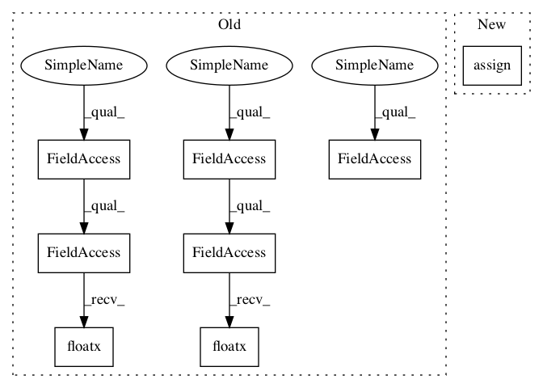

2a64a9d6d97a5c203bd58c0d039eb7e63c07e80f,snntoolbox/simulation/backends/inisim/ttfs.py,SpikeMaxPooling2D,call,#SpikeMaxPooling2D#Any#Any#,502

Before Change
if self.spiketrain is not None:
new_spikes = tf.math.logical_xor(
k.greater(input_psp, 0), k.greater(self.last_spiketimes, 0))
self.add_update([(self.spiketrain,
self.time * k.cast(new_spikes, k.floatx()))])
psp = self.get_psp(input_psp)
return k.cast(psp, k.floatx())
custom_layers = {"SpikeFlatten": SpikeFlatten,
"SpikeDense": SpikeDense,
"SpikeConv2D": SpikeConv2D,
"SpikeAveragePooling2D": SpikeAveragePooling2D,
After Change
if self.spiketrain is not None:
new_spikes = tf.math.logical_xor(
tf.greater(input_psp, 0), tf.greater(self.last_spiketimes, 0))
self.spiketrain.assign(self.time * tf.cast(new_spikes,
self._floatx))
psp = self.get_psp(input_psp)
return tf.cast(psp, self._floatx)
In pattern: SUPERPATTERN
Frequency: 3
Non-data size: 8
Instances
Project Name: NeuromorphicProcessorProject/snn_toolbox
Commit Name: 2a64a9d6d97a5c203bd58c0d039eb7e63c07e80f
Time:
Author: null
File Name: snntoolbox/simulation/backends/inisim/ttfs.py
Class Name: SpikeMaxPooling2D
Method Name: call
Project Name: NeuromorphicProcessorProject/snn_toolbox
Commit Name: 2a64a9d6d97a5c203bd58c0d039eb7e63c07e80f
Time:
Author: null
File Name: snntoolbox/simulation/backends/inisim/ttfs.py
Class Name: SpikeLayer
Method Name: init_membrane_potential
Project Name: NeuromorphicProcessorProject/snn_toolbox
Commit Name: 2a64a9d6d97a5c203bd58c0d039eb7e63c07e80f
Time:
Author: null
File Name: snntoolbox/simulation/backends/inisim/ttfs.py
Class Name: SpikeMaxPooling2D
Method Name: call
Project Name: NeuromorphicProcessorProject/snn_toolbox
Commit Name: 2a64a9d6d97a5c203bd58c0d039eb7e63c07e80f
Time:
Author: null
File Name: snntoolbox/simulation/backends/inisim/ttfs.py
Class Name: SpikeLayer
Method Name: update_neurons